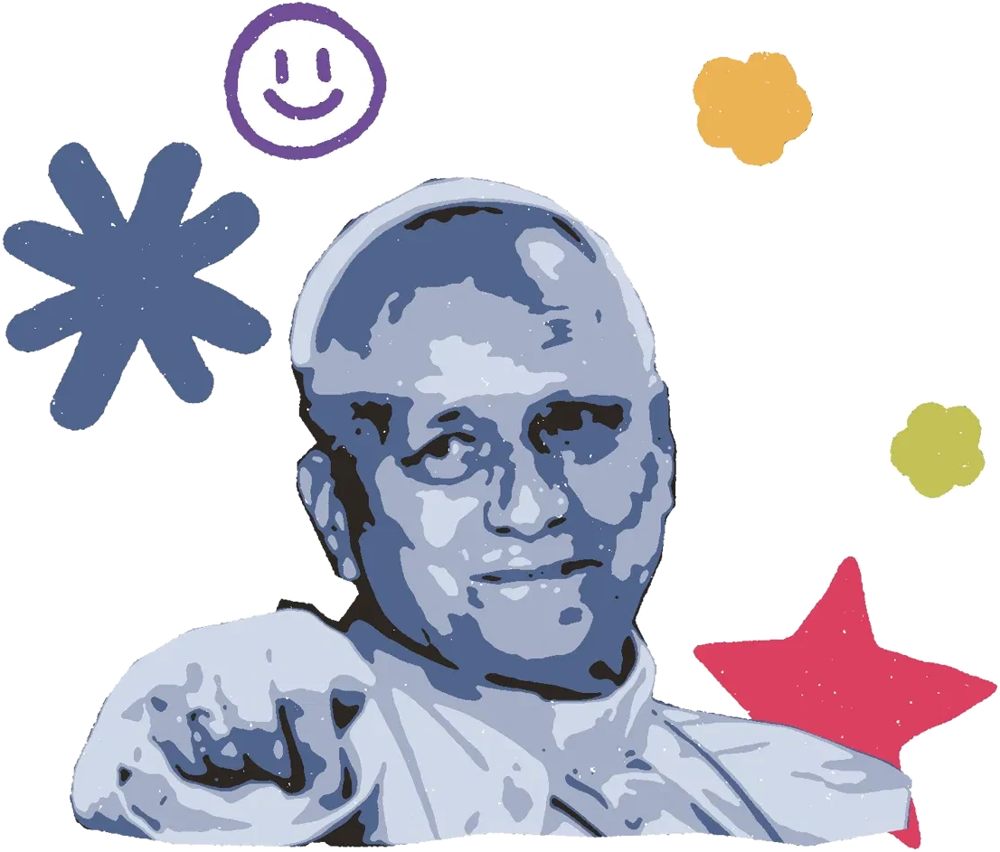

DS5343 Visualización de Datos · UTEC 2026-2
Una noche sin dormir
no le pasa igual a todos
Un sistema de analítica visual de la vulnerabilidad individual a la privación de sueño
Prof. Germain García-Zanabria
El problema
Por qué hace falta ver a cada persona y no solo el promedio.
Problema y audiencia
El promedio del grupo esconde a las personas
Tras una noche sin dormir, unas personas se deterioran mucho y otras casi nada. Un promedio no dice quién es quién.
Motivación
Una correlación publicada con 28 personas
Cui et al. (2026): quienes aumentan la variabilidad de theta se vuelven más lentos en una prueba de vigilancia.
Pero con 28 personas y un solo análisis, es un resultado frágil.
¿Se sostiene persona por persona, y si cambiamos las decisiones del análisis?
un camino de análisis
896 análisis distintos
Datos
71 personas, dos noches, cinco minutos de EEG
Rigor. Corregimos tres errores del procesamiento. Las cifras de hoy son las corregidas.
- 1EEG crudo61 electrodos · dos noches: normal (NS) y privación (SD)
- 2Limpieza e ICAfiltros y referencia promedio; se quitan ojos y músculos
- 3θ relativa por época y electrodoσθ = variabilidad · μθ = nivel medio
- 4Δ = SD − NS, por personalo que la herramienta pone en pantalla
La herramienta
Ocho tareas, una vista para cada una, y las decisiones que las sostienen.
Las tareas, tal como las definimos · tipología de Brehmer y Munzner (2013)
Ocho tareas, cuatro preguntas
¿Dónde?
T1LocalizarUbicar en el cuero cabelludo dónde cambia theta · Q1
T2Comparar métricasContrastar la variabilidad (σθ) con el nivel medio (μθ) · Q2
Vista de topografía¿Quiénes?
T3IdentificarIdentificar a las personas vulnerables · Q3
T4CompararContrastar si comparten una firma espacial · Q4
T5CorrelacionarRelacionar el cambio en el EEG con cada marcador conductual · Q5
T7Comparar gruposContrastar por sexo, sueño habitual y orden de sesión · Q7
Vulnerabilidad · Individual · Comparar¿Cuándo?
T6Describir tendenciaDescribir cómo cambia theta dentro del registro · Q6
Vista de tiempo y reproducción¿Podemos confiar?
T8Verificar robustezComprobar que el hallazgo resiste otras decisiones de análisis
Panel de validación · multiverso
Las mismas tareas
… en cristiano
Gráfico 1 · Topografía
¿Dónde cambia theta?
El cambio de theta en 61 electrodos: noche normal, privación y su diferencia.
Mapas de la cabeza. Rojo sube, azul baja. Un anillo marca el cambio significativo.
Lo que importa es dónde: el mapa conserva la posición real. Dos escalas evitan confundir un nivel con un cambio.
Clic en un electrodo: se sigue en todas las vistas.
Gráfico 2 · Vulnerabilidad
¿Quiénes la pasan peor?
Una persona por punto: cambio en theta frente a cambio en la conducta.
La posición dice el valor. Zona ámbar: peor en ambos. El recuadro da ρ con su intervalo.
Muestra la relación y a cada persona. El intervalo evita exagerar con solo 30 personas.
Clic, lazo o «Comparar» para formar grupos.
Gráfico 3 · Vista individual
¿Comparten un patrón?
Cada columna es una persona y cada fila un electrodo.
El color es el cambio. Si los más afectados compartieran un patrón, sus columnas se parecerían.
Los grupos se arman solo por conducta, nunca por theta: así el resultado no es circular.
Clic en una columna o en una fila para seguirla.
Gráfico 4 · Tiempo y reproducción
¿Cuándo, en los cinco minutos?
Theta durante los cinco minutos: noche normal frente a privación.
Una línea por noche, con su error estándar. La bolita marca el instante.
El tiempo se lee mejor como línea. ▶ une todo: una ventana móvil recalcula todas las vistas.
▶ reproduce; arrastra para elegir un intervalo.
Gráfico 5 · Validación
¿Resiste otro análisis?
Cuatro pruebas que intentan romper el hallazgo.
Cada fila trae su cifra clave. El ↗ abre el gráfico.
Primero el veredicto, después el detalle.
Clic en una fila.
Validación 1 · Parpadeos
¿Son los parpadeos?
Si los parpadeos explican el cambio de theta.
Un punto sobre la diagonal: quitar los parpadeos no cambia nada (ρ = 0,94).
Los puntos de distinto color están mezclados: el cambio no sigue a los parpadeos.
Cursor sobre una persona: ver sus datos.
Validación 2 · Ritmo o fondo 1/f
¿Ritmo real o fondo 1/f?
El espectro de las dos noches y su fondo 1/f.
Un pico en theta sobre el fondo es un ritmo. ρ = 0,81 con la parte periódica.
Solo el espectro permite separar un ritmo del fondo.
Clic en la banda gris: amplía theta.
Validación 3 · Sincronía
¿Cambia la sincronía entre regiones?
Sincronía de theta entre 10 regiones del cerebro.
Una red de regiones y, abajo, el efecto de cada par con su intervalo.
Los intervalos muestran la incertidumbre: no hay cambio global (p = 0,48).
Cursor sobre una región o un par.
Validación 4 · Similitud
¿Se parecen entre sí los vulnerables?
Cada persona unida a las tres más parecidas.
On scatter: cada una en su lugar de la dispersión. Network: ordenadas por parecido.
Si los vulnerables compartieran un patrón, estarían unidos entre sí.
Cursor ilumina a las vecinas; clic elige.
Clasificador 1 · Resultado
¿Se reconoce la noche sin dormir?
AUC 0,89 (0,5 es azar) y 80 % de acierto por persona.
Punto lleno: el modelo. Vacío: la comparación. Línea punteada: azar.
Se lee la validación antes que el puntaje: un AUC alto puede ser un truco.
Cursor sobre una fila: ver la prueba completa.
Clasificador 2 · Registros
¿Dónde se equivoca el modelo?
Las 136 grabaciones en un plano que resume todos los rasgos.
Círculo: normal. Rombo: privación. Anillo ámbar: error. Línea: misma persona.
Forma y color repiten lo mismo. La línea muestra el paso de normal a privación.
Clic en un registro: abre a la persona.
Clasificador 3 · Rasgos
¿Qué rasgos empujan la decisión?
Qué rasgos empujan hacia privación y cuáles hacia noche normal.
Punto: efecto promedio. Línea: rango entre 50 modelos. %: cuántas veces se usó.
Un rasgo suelto es inestable: por eso se muestra el rango.
Clic en un rasgo: ver su efecto en la persona.
Clasificador 4 · Grupos de rasgos
¿Qué familias de rasgos importan?
Cuánto necesita el modelo cada familia de rasgos.
Barras desde cero, con su rango de confianza.
Los grupos son más estables que los rasgos sueltos: se leen primero.
El filtro de rasgos resalta una familia.
Clasificador 5 · Aciertos y errores
¿Se equivoca igual en las dos noches?
Los aciertos y errores del modelo en cada noche.
Más oscuro: mayor proporción de esa fila.
Se calcula por fila para comparar las noches: acierta 81 % en ambas.
El filtro de orden cambia la matriz.
Clasificador 6 · Persona
¿Por qué decidió así con esta persona?
Qué rasgos pesaron en la decisión para una persona.
Azul empuja a normal, rosa a privación, en sus dos grabaciones.
Así se puede confiar, o dudar, de una decisión concreta.
Clic en un registro: llena este panel.
Fundamentos de diseño
Seis decisiones que sostienen la herramienta
Marcos teóricos: Brehmer y Munzner (2013) · Shneiderman (1996) · Cleveland y McGill (1984) · Munzner (2014)
Principales hallazgos · datos corregidos
El cambio es generalizado, pero no universal
Más inestable en 46 personas; al revés en 22
t = 6,07 · dz = 0,74
Electrodos con cambio
Todos, y sin foco frontal.
Relación débil con la conducta
Misma dirección que Cui et al., pero más débil que 0,55 y no significativa.
Es un ritmo, no el fondo 1/f
Y no son los parpadeos (ρ = 0,94).
Análisis distintos: ninguno supera al azar
Multiverso con 2000 permutaciones.
Se reconoce la noche sin dormir
Acierta en el 80 % de las personas.
Cierre
Qué nos llevamos, qué todavía no podemos afirmar y qué sigue.
Conclusiones
Qué nos llevamos
- Sí cambia, pero no a todos por igual. 46 personas suben y 22 bajan.
- La relación con la conducta es débil. No replicamos el ρ ≈ 0,55 publicado.
- Ver a las personas y todo el análisis permite contarlo con honestidad.
Limitaciones
Lo que todavía no podemos afirmar
Trabajo futuro
Lo que sigue
- Probar la herramienta con usuarios reales: 3 a 5 investigadores resolviendo las ocho tareas.
- Validar fuera de este conjunto: otra cohorte, con más personas con prueba de vigilancia.
- Del laboratorio al campo: ¿se puede avisar de la fatiga individual con EEG portátil?
Gracias
andrea-coa.github.io/data-visualization-project
github.com/Andrea-Coa/data-visualization-project